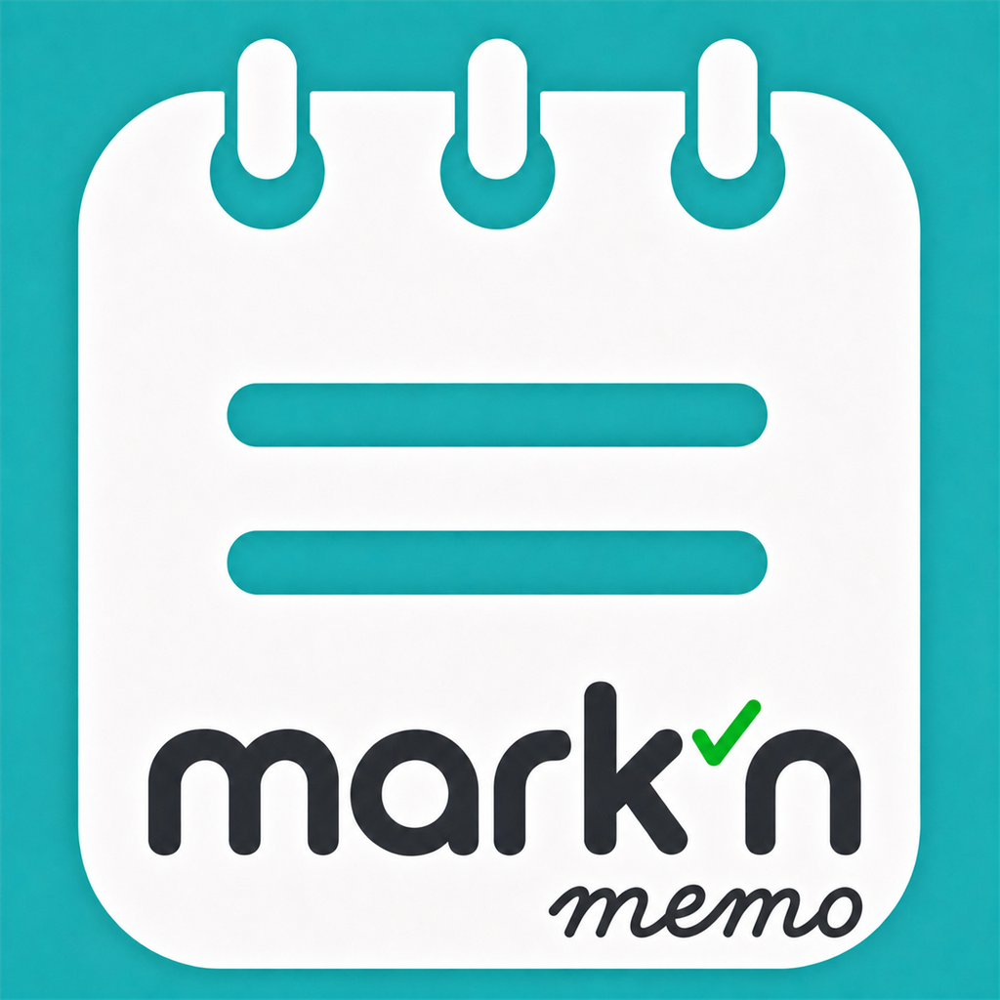
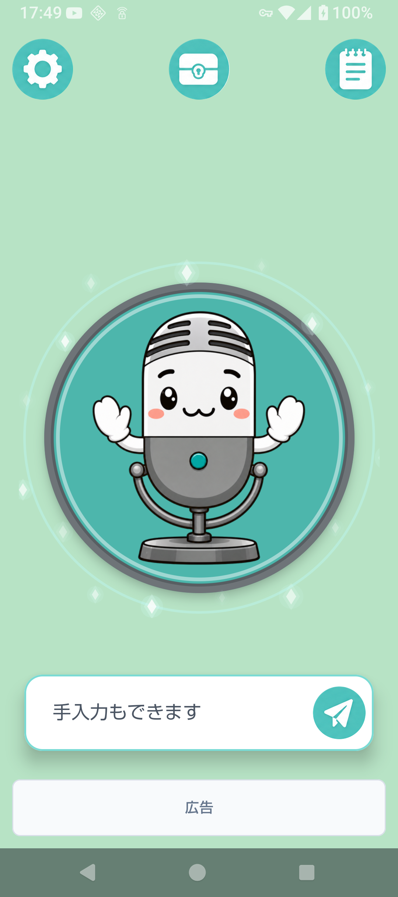
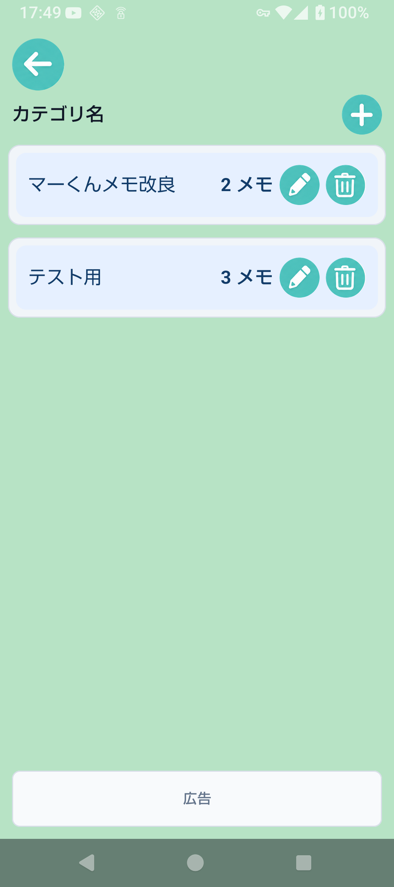
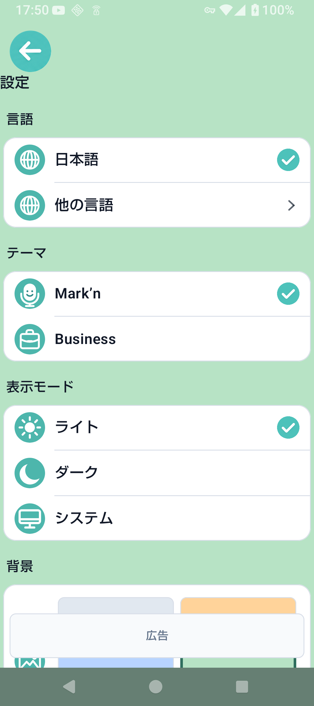

音声入力でメモ化
端末の音声認識機能を使って、話した内容をテキストとして保存します。

Overview
Mark'n Memoは、録音した音声そのものではなく、文字起こしされたテキストを保存するメモアプリです。 日々のアイデア、買い物、作業メモ、あとで見返したい短い思いつきをすばやく捕まえるために設計しています。
Features
端末の音声認識機能を使って、話した内容をテキストとして保存します。
メモをカテゴリごとに整理し、あとから見つけやすくできます。
思いつきを逃さないよう、すばやく入力できる画面構成を重視しています。
音声入力による文字起こしは、お使いの端末の音声認識機能に依存します。対応言語や認識精度は、端末・OS・音声認識サービス・通信環境によって異なる場合があります。
Screenshots
声でも手入力でも。思いつきを残して、カテゴリごとにすっきり整理できます。


